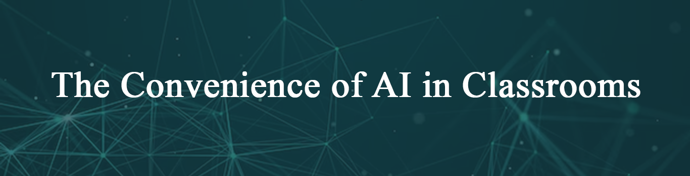
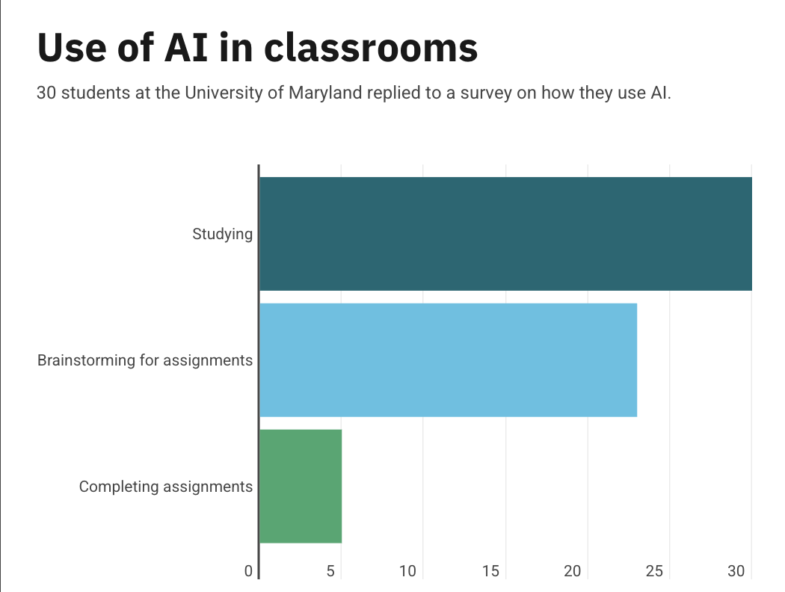
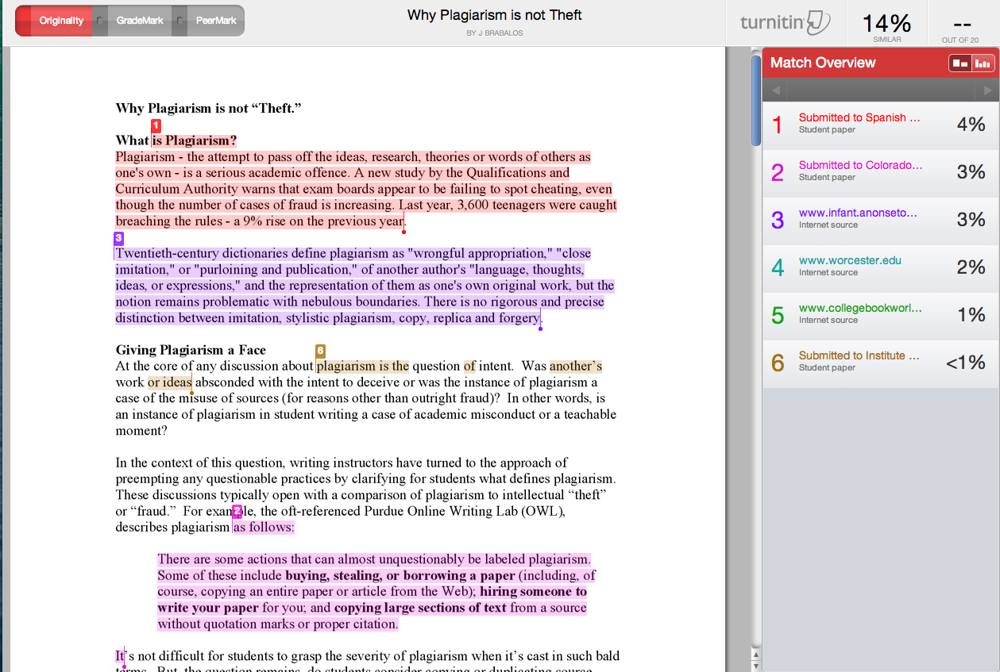
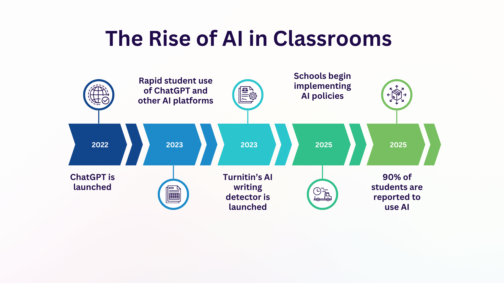
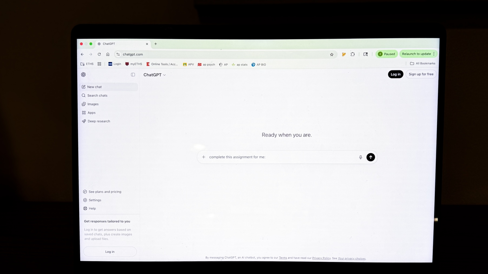

by Isabella de los Reyes | May 08, 2026
From study tools to entire assignment completion, artificial intelligence has altered the way students work in and out of the classroom.
Since the release of ChatGPT, an AI platform developed by OpenAI, in 2022, student access to and reliance on artificial intelligence tools has increased significantly. According to a 2025 survey of 1,100 college students, 90% used AI academically, with almost three-fourths of students reporting their use increased over the course of a year. The survey suggests that AI use is now extremely common in college classrooms nationwide.

AI tools have allowed students to complete assignments faster. Some even allow students to complete assignments with minimal effort. Whether students are using applications such as ChatGPT or Claude 3.5 Sonnet, AI has simultaneously become a major factor for academic success and growing student reliance on it.
“I try to just use it for studying and checking my work when completing assignments. It’s hard to not immediately go to ChatGPT when I know it’s there and I know it makes things so much easier,” said an economics major at the University of Maryland.
Many professors have their own policies on AI in classrooms. Some professors don’t allow any AI assistance, and some have strict guidelines on when AI is permitted and must be disclosed. While students don’t always follow these policies, professors also have their own ways to detect AI usage.

To enforce classroom AI policies, professors use computer systems that can detect AI like Turnitin, a plagiarism and AI-detection tool. These AI detection systems have helped universities monitor AI reliance and usage, but many students still find a way around AI detection tools. Some students have reported false AI detection in their assignments, where original writing was flagged as written by AI, showing that both students and detection systems can produce errors.
“I understand why professors would want to filter through any work that was completely done by AI, because it is unfair that some students take so much time to do assignments on their own while others just have ChatGPT do it for them. But I have had to speak to professors who thought that my work was done by ChatGPT when it wasn't, which is really annoying,” said a public policy major at the University of Maryland.
A new feature of Grammarly, originally a grammar and plagiarism checker, has evolved to allow both students and professors to check for AI in papers. It also has a feature that can rewrite AI-generated text to sound more natural, called AI Humanizer.

Whether it’s students using AI to do their assignments, or teachers using AI to check assignments, it is clear that adapting to the increase of an AI presence in the classroom has created challenges. Now that students can access AI in seconds, their urgency to learn on their own and think critically has shifted.
“I do feel guilty using apps like ChatGPT as a tool while doing assignments, but when everyone around me is using it and encouraging me to use it because it’s so easy and quick, it’s hard to not just turn to AI,” said a sophomore public policy major at the University of Maryland.

Many students argue that AI is really helpful when preparing for exams because some platforms can generate study guides and practice exams. AI platforms such as Thea allow students to simply input their study material and notes, and the app completely transforms information into exam preparation tools.
Some students have recognized this evolution of AI as something classrooms will need to adapt to. AI is constantly evolving and its presence is rapidly increasing. Alongside that, universities and students must grow with it and learn how to use it as a support tool rather than a replacement for learning independently.